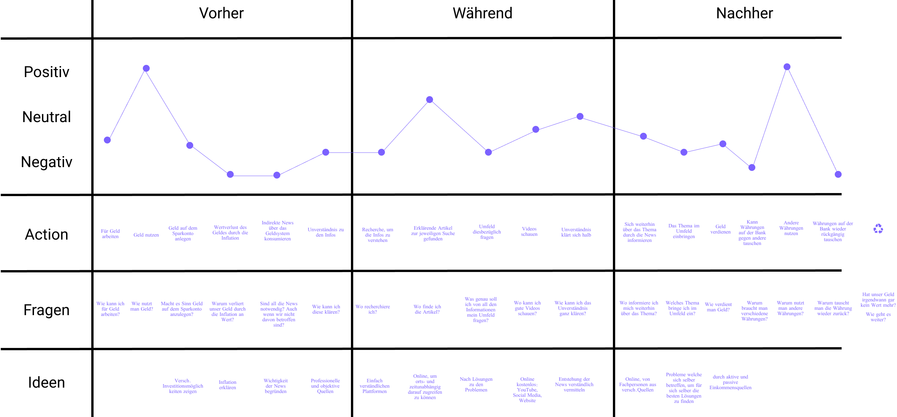

Idee
Warum gibt es eigentlich Geld? Wie sind wir zu diesem Mittel gekommen? Warum werden wir beinahe täglich mit Informationen zu unserem Geldsystem konfrontiert, mit welchen wir nichts anfangen können? Wie können wir unser System nachhaltig nutzen?
Das mangelnde Wissen über unser Finanzsystem ist ein grosses Thema. Nur sehr wenige Menschen setzen sich damit vertieft auseinander, obwohl direkt oder indirekt jeder Einzelne davon betroffen ist. Recherchiert man den Aufbau des Geldsystems nicht aus Eigeninteresse, wird man nur selten damit konfrontiert. Die News lernen wir – aufgrund des fehlenden Wissens – zu ignorieren und nutzen gutgläubig unser bestehendes Geldsystem.
Mit diesen Problemstellungen habe ich mich in meiner Diplomarbeit vertieft auseinandergesetzt.
Das mangelnde Wissen über unser Finanzsystem ist ein grosses Thema. Nur sehr wenige Menschen setzen sich damit vertieft auseinander, obwohl direkt oder indirekt jeder Einzelne davon betroffen ist. Recherchiert man den Aufbau des Geldsystems nicht aus Eigeninteresse, wird man nur selten damit konfrontiert. Die News lernen wir – aufgrund des fehlenden Wissens – zu ignorieren und nutzen gutgläubig unser bestehendes Geldsystem.
Mit diesen Problemstellungen habe ich mich in meiner Diplomarbeit vertieft auseinandergesetzt.
Prozess
Befragung
Gerade, weil Geld in unserer Gesellschaft ein ziemliches Tabu-Thema ist, war es mir besonders wichtig, eine umfangreiche Umfrage durchzuführen. Dadurch konnte ich das Vorwissen, die Interessen, das Lernverhalten, die Meinungen und die mit sich bringenden Glaubenssätze von insgesamt 147 Personen meiner Zielgruppe abholen. Diese Ausgangslage ermöglichte es mir eine communitybasierte und objektive Lernplattform zu erstellen.
Die Auswertung der mehrheitlich offenen Fragestellungen nahm mehrere Stunden Zeit in Anspruch. Dank den wertvollen Feedbacks und mehreren Gesprächen wurde mir besonders die Wichtigkeit einer authentischen, praxisbezogenen und einfach verständlichen Vermittlungsmethode im Finanzbereich bewusst. Es stellte sich klar heraus, dass das Interesse meiner User nach einem kurzen und praxisbezogenen Crashkurs primär bei den individuellen Investitionsmöglichkeiten liegt.
Gerade, weil Geld in unserer Gesellschaft ein ziemliches Tabu-Thema ist, war es mir besonders wichtig, eine umfangreiche Umfrage durchzuführen. Dadurch konnte ich das Vorwissen, die Interessen, das Lernverhalten, die Meinungen und die mit sich bringenden Glaubenssätze von insgesamt 147 Personen meiner Zielgruppe abholen. Diese Ausgangslage ermöglichte es mir eine communitybasierte und objektive Lernplattform zu erstellen.
Die Auswertung der mehrheitlich offenen Fragestellungen nahm mehrere Stunden Zeit in Anspruch. Dank den wertvollen Feedbacks und mehreren Gesprächen wurde mir besonders die Wichtigkeit einer authentischen, praxisbezogenen und einfach verständlichen Vermittlungsmethode im Finanzbereich bewusst. Es stellte sich klar heraus, dass das Interesse meiner User nach einem kurzen und praxisbezogenen Crashkurs primär bei den individuellen Investitionsmöglichkeiten liegt.
Personas und Value Proposition Canvas
Um die Empathie zu meiner Zielgruppe zu verstärken, entwickelte ich drei inhaltsreiche Personas: Louis Bayern, Elisa Kaiser und Timon Zimmermann. Zusätzlich erstellte ich für jede Persona ein Value Proposition Canvas, in welchem ich die neutralen und die «mit Schmerz» verbundenen Aufgaben der Persona sowie den Nutzer-Versprechen – den sogenannten Jobs, Pains und Gains – festgehalten habe.
Um die Empathie zu meiner Zielgruppe zu verstärken, entwickelte ich drei inhaltsreiche Personas: Louis Bayern, Elisa Kaiser und Timon Zimmermann. Zusätzlich erstellte ich für jede Persona ein Value Proposition Canvas, in welchem ich die neutralen und die «mit Schmerz» verbundenen Aufgaben der Persona sowie den Nutzer-Versprechen – den sogenannten Jobs, Pains und Gains – festgehalten habe.
Job Stories
Um auf meiner Plattform verschiedene Benutzergruppen abfangen zu können, erstellte ich zu den drei Personas je eine unterschiedliche Job Story. Diese standen besonders bei der Erarbeitung des LoFi-Prototypen und der User-Testings im Vordergrund.
Um auf meiner Plattform verschiedene Benutzergruppen abfangen zu können, erstellte ich zu den drei Personas je eine unterschiedliche Job Story. Diese standen besonders bei der Erarbeitung des LoFi-Prototypen und der User-Testings im Vordergrund.
Indirekte News über das Geldsystem konsumieren
«Wenn ich in unserer Regionalzeitung wieder über die hohen Inflationsraten sehe, fühle ich mich nicht angesprochen und lese den Artikel nicht», Louis Bayern.
Recherche, um die Infos zu verstehen
«Als ich von einem Mitarbeiter über die Bankenpleite der Sberbank Europa hörte, recherchierte ich im Netz unter professionellen Quellen nach aufschlussreichen Artikeln, um zu verstehen wie es dazu kommen kann», Elisa Kaiser.
Unverständnis zu den Infos
«Wenn ich auf Social Media einen Post zu Kryptowährungen sehe, interessiert es mich nicht, da ich keine Kryptos habe und nicht verstehe, was der Sinn hinter den digitalen Währungen ist», Timon Zimmermann.
«Wenn ich in unserer Regionalzeitung wieder über die hohen Inflationsraten sehe, fühle ich mich nicht angesprochen und lese den Artikel nicht», Louis Bayern.
Recherche, um die Infos zu verstehen
«Als ich von einem Mitarbeiter über die Bankenpleite der Sberbank Europa hörte, recherchierte ich im Netz unter professionellen Quellen nach aufschlussreichen Artikeln, um zu verstehen wie es dazu kommen kann», Elisa Kaiser.
Unverständnis zu den Infos
«Wenn ich auf Social Media einen Post zu Kryptowährungen sehe, interessiert es mich nicht, da ich keine Kryptos habe und nicht verstehe, was der Sinn hinter den digitalen Währungen ist», Timon Zimmermann.
IST-User Journey Map
Aus den drei erstellten Value Proposition Canvas sammelte ich die wichtigsten Jobs, Pains und Gains, aus welchen ich eine umfangreiche IST-User Journey Story entwickelte. Mithilfe der IST-User Journey Map beschreibe ich die einzelnen Berührungspunkte und die daraus entstehende Gefühlslage, mit welchen meine Zielgruppe ohne meine Lernplattform konfrontiert werden, um anhand dessen, die Nutzerziele für meine Dienstleistung zu definieren.

Aus den drei erstellten Value Proposition Canvas sammelte ich die wichtigsten Jobs, Pains und Gains, aus welchen ich eine umfangreiche IST-User Journey Story entwickelte. Mithilfe der IST-User Journey Map beschreibe ich die einzelnen Berührungspunkte und die daraus entstehende Gefühlslage, mit welchen meine Zielgruppe ohne meine Lernplattform konfrontiert werden, um anhand dessen, die Nutzerziele für meine Dienstleistung zu definieren.
Zielgruppe
Dadurch, dass ich mein Umfeld, welche zu einem grossen Teil zeitgleich auch meine Zielgruppe ist, durch die Umfrage schon quasi vor dem Projektstart mit meiner Projektidee konfrontierte, erfuhr ich kontinuierlich von persönlichen Erlebnissen, Interessen sowie Ängsten gegenüber dem Thema Geld und Investitionen gegenüber. Der stetige Austausch war eine grosse Bereicherung bei der Erstellung meiner Plattform.
Dadurch, dass ich mein Umfeld, welche zu einem grossen Teil zeitgleich auch meine Zielgruppe ist, durch die Umfrage schon quasi vor dem Projektstart mit meiner Projektidee konfrontierte, erfuhr ich kontinuierlich von persönlichen Erlebnissen, Interessen sowie Ängsten gegenüber dem Thema Geld und Investitionen gegenüber. Der stetige Austausch war eine grosse Bereicherung bei der Erstellung meiner Plattform.
Die Lernplattform über unser Geldsystem wird von erwachsenen Personen der Mittelklasse genutzt, welche ihre beruflichen Ziele bis ins hohe Alter erfolgreich verfolgen und ausüben. Sie erhalten eine monatliche Entlohnung für ihre verrichtete Arbeit, welche sie zu einem grossen Teil ausgeben. Monatlich überweisen sie einen Teil ihres Einkommens auf ihr Sparkonto, um auf grössere, materielle Ziele zu sparen. Da sie im Verlauf ihrer staatlichen, schulischen Bildung bisher noch nie über die Geschichte unseres Geldsystems oder die persönlichen Investitionsmöglichkeiten aufgeklärt wurden, fühlen sie sich von den internationalen Finanznews nicht direkt angesprochen. Durch das mangelnde Wissen verlieren ihre Ersparnisse auf dem Sparkonto laufend an Wert.
SOLL-Szenario
Nachdem ich meine IST-User Journey Map formuliert habe und daraus die Nutzerziele für meine Dienstleistung definierte, wurde mir klar, welche Funktionen die künftige Dienstleistung beinhaltet. Mit der SOLL-User Journey Map visualisierte und dokumentierte ich das Nutzererlebnis, welche die User mit meiner Lernplattform haben sollen.
Nachdem ich meine IST-User Journey Map formuliert habe und daraus die Nutzerziele für meine Dienstleistung definierte, wurde mir klar, welche Funktionen die künftige Dienstleistung beinhaltet. Mit der SOLL-User Journey Map visualisierte und dokumentierte ich das Nutzererlebnis, welche die User mit meiner Lernplattform haben sollen.
Geschärfte Projekt-, Produkt- und UX-Ziele
Die neu erstellte SOLL-User Journey Map diente als perfekte Vorlage um die Projekt-, Produkt- und UX-Ziele zu schärfen.
Die neu erstellte SOLL-User Journey Map diente als perfekte Vorlage um die Projekt-, Produkt- und UX-Ziele zu schärfen.
Geschärfte Zielsetzungen
- Ich schaffe eine Lernplattform über das Grundwissen und die Geschichte zu unserem Geldsystem.
- Die Informationen sind mithilfe von verschiedenen Medientechnologien einfach, effizient, verständlich und interessant aufgebaut.
- Mithilfe des Inhaltes meiner Lernplattform hat man das Grundlagewissen, um die aktuellen News zu unserem Geldsystem zu verstehen und sich mit seinen persönlichen Investitionsmöglichkeiten auseinanderzusetzen.
- Bei Unklarheiten kann man sich ganz einfach bei mir melden.
- Die Lernplattfrom soll sich mittels visuellen und benutzerfreundlichen Vermittlungsmethoden abheben.
Vision
Anschliessend fasste ich die geschärften Ziele meiner Plattform nochmals in einem Elevator-Pitch und in einem Produkt-Tweet zusammen. Dies half mir, mich bei meinem weiteren Vorgehen auf das Wesentliche zu konzentrieren und mich erst in einem weiteren Schritt auf spezifische Umfrage-Inputs einzulassen.
Anschliessend fasste ich die geschärften Ziele meiner Plattform nochmals in einem Elevator-Pitch und in einem Produkt-Tweet zusammen. Dies half mir, mich bei meinem weiteren Vorgehen auf das Wesentliche zu konzentrieren und mich erst in einem weiteren Schritt auf spezifische Umfrage-Inputs einzulassen.
Elevator Pitch
Ich erstelle eine Lernplattform über das Grundwissen zu unserem Geldsystem und die persönlichen Investitionsmöglichkeiten für Kleinanleger.
Die Lernplattform hebt sich klar mittels visuellen, einfach verständlichen, motivierenden, interessanten und benutzerfreundlichen Vermittlungsmethoden von allen anderen ab. Die Lernplattform wird von erwachsenen Personen der Mittelklasse genutzt, welche monatlich Geld auf die Seite legen können, sich aber noch nie aktiv mit unserem Geldsystem befasst haben. Sie gehen mit offenen Augen durch die Welt und möchten ihre beruflichen Ziele bis ins hohe Alter erfolgreich verfolgen und ausüben. Aufgrund ihres Unwissens überweisen sie ihren Sparanteil auf ihr Sparkonto, auf welchem es durch die Inflation kontinuierlich an Wert verliert. Von den nationalen und internationalen Finanznews fühlen sie sich nicht angesprochen, da sie bisher noch nie direkt mit den Problemen, welche unser Geldsystem mit sich bringt, konfrontiert wurden. Durch das gewonnene Wissen der Lernplattform werden die User motiviert sich tiefer mit unserem Finanzsystem und ihren persönlichen Investitionsmöglichkeiten auseinanderzusetzen. Durch die Lernplattform finden sie einen einfachen und interessanten Zugang in die Finanzwelt.
Produkt Tweet
Setze dich mit unserem Geldsystem auseinander und lerne zu verstehen, wie du deine persönlichen Ersparnisse investieren kannst.
Ich erstelle eine Lernplattform über das Grundwissen zu unserem Geldsystem und die persönlichen Investitionsmöglichkeiten für Kleinanleger.
Die Lernplattform hebt sich klar mittels visuellen, einfach verständlichen, motivierenden, interessanten und benutzerfreundlichen Vermittlungsmethoden von allen anderen ab. Die Lernplattform wird von erwachsenen Personen der Mittelklasse genutzt, welche monatlich Geld auf die Seite legen können, sich aber noch nie aktiv mit unserem Geldsystem befasst haben. Sie gehen mit offenen Augen durch die Welt und möchten ihre beruflichen Ziele bis ins hohe Alter erfolgreich verfolgen und ausüben. Aufgrund ihres Unwissens überweisen sie ihren Sparanteil auf ihr Sparkonto, auf welchem es durch die Inflation kontinuierlich an Wert verliert. Von den nationalen und internationalen Finanznews fühlen sie sich nicht angesprochen, da sie bisher noch nie direkt mit den Problemen, welche unser Geldsystem mit sich bringt, konfrontiert wurden. Durch das gewonnene Wissen der Lernplattform werden die User motiviert sich tiefer mit unserem Finanzsystem und ihren persönlichen Investitionsmöglichkeiten auseinanderzusetzen. Durch die Lernplattform finden sie einen einfachen und interessanten Zugang in die Finanzwelt.
Produkt Tweet
Setze dich mit unserem Geldsystem auseinander und lerne zu verstehen, wie du deine persönlichen Ersparnisse investieren kannst.
Ideenfindung
Für die Ideenfindung nutzte ich die Crazy-8-Methode. Für die Crazy-8-Methode teilt man ein Blatt Papier in acht identische Felder, für welche man je eine Minute Zeit hat, eine Idee zu skizzieren. Innert kürzester Zeit füllten sich die acht Felder mit ganz verschiedensten Ansätzen.
Für die Ideenfindung nutzte ich die Crazy-8-Methode. Für die Crazy-8-Methode teilt man ein Blatt Papier in acht identische Felder, für welche man je eine Minute Zeit hat, eine Idee zu skizzieren. Innert kürzester Zeit füllten sich die acht Felder mit ganz verschiedensten Ansätzen.
Benchmark-Analyse
Bevor ich alle etablierten Ideen der Crazy-8-Methode in meinem LoFi-Prototypen versuchte unterzubekommen, entschied ich mich eine Benchmark-Analyse durchzuführen.
Ich habe mir sieben Lernapps heruntergeladen und fünf Lernplattformen genauer angeschaut, welche unter anderem in meiner Umfrage als Musterbeispiele empfohlen wurden. Ich habe zahlreiche Screens mit den inspirierendsten Design- und Funktionselementen fotografiert und zur Inspiration meines LoFi-Prototypen festgehalten. Schlussendlich haben sich aus den zwölf Quellen drei webbasierte Lernplattformen als Hauptquelle herauskristallisiert: CreativeLive, Studyflix und MarketPeak.
Bevor ich alle etablierten Ideen der Crazy-8-Methode in meinem LoFi-Prototypen versuchte unterzubekommen, entschied ich mich eine Benchmark-Analyse durchzuführen.
Ich habe mir sieben Lernapps heruntergeladen und fünf Lernplattformen genauer angeschaut, welche unter anderem in meiner Umfrage als Musterbeispiele empfohlen wurden. Ich habe zahlreiche Screens mit den inspirierendsten Design- und Funktionselementen fotografiert und zur Inspiration meines LoFi-Prototypen festgehalten. Schlussendlich haben sich aus den zwölf Quellen drei webbasierte Lernplattformen als Hauptquelle herauskristallisiert: CreativeLive, Studyflix und MarketPeak.
CreativeLive ist überzeugt, dass in jedem von uns eine:n Schöpfer:in steckt. Sie sind eine Gruppe von Innovatoren und Macher:innen, welche gemeinsam hochwertiges Bildungsmaterial für alle zur Verfügung stellen. Nebst Online-Kursen, Dokumenten und Blogartikel, betreuuen sie auch einen Podcast und schreiben laufend Erfolgsgeschichten von inspirierenden Alltagskünstler:innen.
Von welchen Funktionen und Designelemente liess ich mich von CreativeLive inspirieren?
Von welchen Funktionen und Designelemente liess ich mich von CreativeLive inspirieren?
- Der Inhalt der Lernplattform lebt von verschiedenen Medientypen: Bild, Text, Video, Podcast
- Die Community steht im Vordergrund
- Authentischer Auftritt: Vorstellung der Ausbilder:innen, Blog und Podcast stützt sich auf Erfolgsgeschichten, FAQ
- Schlichtes Design mit sympathischer Bildwelt
- Hochqualitativer Inhalt
Studyflix betet über 4 Millionen Schüler:innen und Studierenden kostenlose Lernvideos, Ausbildungsplätze und Jobs. Sie erklären in über 3'000 hochwertigen Videos, zu jedem Thema die wichtigsten Inhalten in unter fünf Minuten. Die Themengebiete reichen von Wirtschaft, über Mathematik, Physik, Psychologie bis zum Allgemeinwissen, Studientipps und noch viele mehr.
Von welchen Funktionen und Designelemente lasse ich mich von Studyflix inspirieren?
Von welchen Funktionen und Designelemente lasse ich mich von Studyflix inspirieren?
- Sie sprechen den User direkt an und motivieren ihn persönlich.
- Komplexe Themen werden einfach und verständlich erklärt.
- Einheitliche Bild- und Farbwelt
- Intuitiver Aufbau
- Die Themen werden mithilfe von Videos und Texten vermittelt.

MarketPeak ist eine Krypto- und Blockchain-Schulungsplattform. Sie bieten über 200 Lernvideos an, wöchentliche Update-Webinare über die aktuelle Marktsituation im Krypto- und Blockchain-Bereich, individuelle Coachings und Lernvideos, Live-Webinare, sowie Events zur Persönlichkeitsentwicklung an.
Von welchen Funktionen und Designelementen lasse ich mich von MarketPeak inspirieren?
Von welchen Funktionen und Designelementen lasse ich mich von MarketPeak inspirieren?
- Sie vermitteln das komplexe Thema häppchenweise in einfach nachvollziehbaren Lernvideos.
- Sehr authentischer und transparenter Auftritt: Vorstellung der Experten, des Teams, Lernvideos stützt sich auf Erfolgs- und Misserfolgsgeschichten , von Experten betreutes Postfach, FAQ, Live-Webinare, individuelle Coachings und Community-Weiterbildungsevents.
- Wissenstest
- Zur Verfügung gestellte Dokumente zum Herunterladen.
Storyboard
Vor dem Start meiner ersten Scribbles, visualisierte ich das «Unverständnis zu den finanzbezogenen News» in einem Storyboard, um meine Idee nochmals distanzierter betrachten und situativ überdenken zu können. Anhand dessen hatte ich eine erste Vorstellung, wie die Navigationsarchitektur auf der Lernplattform aussehen könnte.
Vor dem Start meiner ersten Scribbles, visualisierte ich das «Unverständnis zu den finanzbezogenen News» in einem Storyboard, um meine Idee nochmals distanzierter betrachten und situativ überdenken zu können. Anhand dessen hatte ich eine erste Vorstellung, wie die Navigationsarchitektur auf der Lernplattform aussehen könnte.
Lösungsgestaltung - Vom LoFi- zum HiFi-Prototypen
Anhand des User Flows aus dem Storyboard, skizzierte ich einen ersten Mobile-Konzeptentwurf welcher ich im Anschluss auf Figma übertrage und daraus einen interaktiven Prototypen erstellte. Mithilfe der anderen beiden User Flows ergänzte ich die Screens und versuchte durch das «Storyboard-Denken» meine ersten Entwürfe immer wieder von aussen zu betrachten, alle gewonnenen Erkenntnisse des Human Centered Designs zu berücksichtigen und dem User eine intuitive Bedienung zu ermöglichen.
Anhand des User Flows aus dem Storyboard, skizzierte ich einen ersten Mobile-Konzeptentwurf welcher ich im Anschluss auf Figma übertrage und daraus einen interaktiven Prototypen erstellte. Mithilfe der anderen beiden User Flows ergänzte ich die Screens und versuchte durch das «Storyboard-Denken» meine ersten Entwürfe immer wieder von aussen zu betrachten, alle gewonnenen Erkenntnisse des Human Centered Designs zu berücksichtigen und dem User eine intuitive Bedienung zu ermöglichen.

User Testings
Während der Ausarbeitung des Prototypen führte ich insgesamt fünf User Testings durch. Durch die iterative Vorgehensweise nahmen die Unklarheiten drastisch ab, das Interesse der Testpersonen stieg und der LoFi-Prototypen entwickelte sich immer mehr zum HiFi-Prototypen.
Während der Ausarbeitung des Prototypen führte ich insgesamt fünf User Testings durch. Durch die iterative Vorgehensweise nahmen die Unklarheiten drastisch ab, das Interesse der Testpersonen stieg und der LoFi-Prototypen entwickelte sich immer mehr zum HiFi-Prototypen.
«Bereits fünf Testpersonen decken etwa 80% aller Usability-Probleme auf, sofern die Personen derselben Zielgruppe angehören.», Quelle:
IWMedien
Die wichtigsten Learnings aus den User-Testings
- Weniger ist mehr.
- Durch Personalisierung und Transparenz gewinnt man das Vertrauen der User, was gerade im Finanzbereich sehr wichtig ist.
- Die falsche Wortwahl in Überschriften kann einen User gleich vertreiben, obwohl unter diesem, einen für ihn/sie sehr aufschlussreichen und interessanten Mehrwert wäre.
- Packende Startseite designen, ansonsten verscheucht es den User gleich wieder von der Website.
- Wichtige Funktionen auffällig designen.
- Individuelle Goodies motivieren: Bspw., wenn man durch das Lesen der Website lernt seine eigenen Ersparnisse erfolgreich anzulegen, einen Wissenstest absolvieren kann oder bei der weiteren Entwicklung der Website mithelfen kann.
- Ein klares und individuelles «Warum» erhöht das Interesse der User.
Fazit
Die Arbeit hat mir das mangelnde Wissen über unser Geld und unsere Investitionsmöglichkeiten deutlich bestätigt. Besonders die Gespräche mit Wirtschaftsstudenten, einer Bank-Direktorin, Krypto-Enthusiasten und einem Finanzberater bestätigten die kritische Ausgangslage, in welcher wir uns befinden. Niemand kann vorhersagen, was uns die nächsten Jahre erwarten wird. Auf jeden Fall steht uns in der Finanzwelt eine spannende Zeit bevor, welche uns alle beeinflussen wird. Des Weiteren war die durchgeführte Umfrage einen grossen Mehrwert für den Inhalt meines Projektes, da ich seither kontinuierlich mit dem Thema konfrontiert werde und immer wieder neues lerne. Bei jedem Gespräch profitiere ich von neuen Erfahrungen, neuen Quellen und weiteren Meinungen gegenüber dem Geldsystem. Ich lernte noch weitere Investitionsmöglichkeiten kennen und bilde mir zum Thema Geld und Investitionen eine immer objektivere Meinung.
Mit meiner Diplomarbeit habe ich eine dynamische Lernplattform zu unserem Finanzsystem und unseren Investitionsmöglichkeiten erarbeitet. Ich bin mir sicher mit «learn to invest» viele Menschen zu motivieren, sich vertiefter mit ihren persönlichen, finanziellen Möglichkeiten und unserem Geldsystem auseinanderzusetzen.
Mit meiner Diplomarbeit habe ich eine dynamische Lernplattform zu unserem Finanzsystem und unseren Investitionsmöglichkeiten erarbeitet. Ich bin mir sicher mit «learn to invest» viele Menschen zu motivieren, sich vertiefter mit ihren persönlichen, finanziellen Möglichkeiten und unserem Geldsystem auseinanderzusetzen.
Herzlichen Dank
Ich möchte mich herzlich bei allen bedanken, welche mich während meiner Abschlussarbeit unterstützt haben. Durch eure Ideen, Inputs und Testings konnte ich «learn to invest» ganz nach Human Centered Design entwickeln und umsetzen.
Einen besonderen Dank geht an:
- Fabian Scheiwiller, Mentor
- Boris Périsset, Dozent
- Alle Teilnehmer:innen meiner Umfrage
- Jana Kaiser, Student International Business Administration
- Corinna Strickler, Direktorin Sparkasse Schwyz
- Luca Schindler, Krypto-Experte
- Manuel Suter, Investor